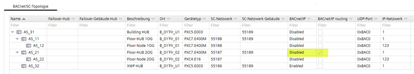
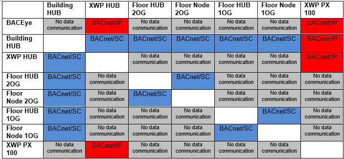

BACnet/IP disabled – BACnet/IP routing enabled - Hub
Configuration ABT Site – BACnet/SC
显示 ABT 站点中的配置。楼层集线器 AS_21 启用了 BACnet/IP 但禁用了 BACnet/IP. 尽管启用了 BACnet/IP 路由，但从属节点 AS_22 在 BACnet/IP. 上不可见

Topology and data communication
说明哪些设备可以传送数据以及数据的传输方式。在设备 AS_32 上启用 BACnet/IP – XWP 集线器通过 BACnet/IP. 呈现具有可见 BACnet 对象的设备 虽然 BACnet/IP 路由在楼层集线器 2 楼上激活，但集线器和 2 楼的楼层节点在 BACnet/IP. 上均不可见。 BACnet/IP 必须在BACnet/IP 路由工作的设备。
